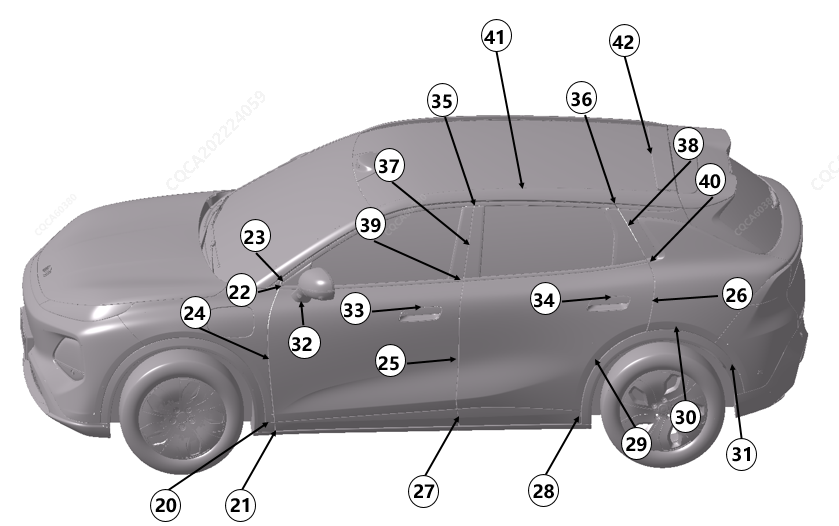

|
Расположение |
Подробное описание |
Допустимый размер зазора (mm) |
Допустимый размер перепада по плоскости (mm) |
|---|---|---|---|
|
20 |
Крыло относительно арки переднего колеса |
0～1.0 |
/ |
|
21 |
Арка переднего колеса относительно нижней защитной панели передней двери |
2.5~5.5，P≤1.5 |
-1.8~1.8 |
|
22 |
Молдинг передней двери относительно накладки переднего треугольного окна |
2.5~5.5 |
-1.2~1.2 |
|
23 |
Декоративный хромированный молдинг оконного проема передней двери относительно накладки переднего треугольного окна |
2.5~5.5 |
/ |
|
24 |
Крыло относительно передней двери |
2.9~4.5，P≤0.8 |
-0.5~1.0，P≤0.8 |
|
25 |
Передняя дверь относительно задней двери |
2.9~4.5，P≤0.8 |
-0.5~1.0，P≤0.8 |
|
26 |
Задняя дверь относительно боковины |
2.9~4.5，P≤0.8 |
-0.5~1.0，P≤0.8 |
|
27 |
Нижняя защитная панель передней двери относительно нижней защитной панели задней двери |
3.5~6.5，P≤1.5 |
-1.8~1.8 |
|
28 |
Арка заднего колеса относительно защитной панели задней двери |
2.5~5.5，P≤1.5 |
-1.8~1.8 |
|
29 |
Задняя дверь относительно арки заднего колеса |
2.5~4.9，P≤1.5 |
/ |
|
30 |
Арка заднего колеса относительно боковины |
0~1.0 |
/ |
|
31 |
Арка заднего колеса относительно заднего бампера |
0~1.0 |
/ |
|
32 |
Зеркало заднего вида относительно внешней панели передней двери |
0~1.0 |
/ |
|
33 |
Ручка передней двери относительно передней двери |
1.5~2.9，P≤1.2 |
-1.3~0.3 |
|
34 |
Ручка задней двери относительно задней двери |
1.5~2.9，P≤1.2 |
-1.3~0.3 |
|
35 |
Декоративный хромированный молдинг оконного проема передней двери относительно декоративного хромированного молдинга оконного проема задней двери |
2.5~5.5 |
-1.0～1.5 |
|
36 |
Декоративный хромированный молдинг оконного проема задней двери относительно декоративной панели боковины |
2.5~5.5 |
-1.0~1.5 |
|
37 |
Проем передней двери относительно проема задней двери |
2.5~5.5，P≤1.5 |
-1.0~1.5，P≤1.5 |
|
38 |
Задний декоративный элемент оконного проема задней двери относительно декоративной панели боковины |
2.5~5.5，P≤1.5 |
-1.0~1.5，P≤1.5 |
|
39 |
Наружный молдинг передней двери относительно наружного молдинга задней двери |
2.5~5.5 |
-1.0~1.5 |
|
40 |
Наружный молдинг задней двери относительно декоративной панели боковины |
2.5~5.5 |
-1.0~1.5 |
|
41 |
Панорамная крыша относительно боковины |
2.5~5.5 |
/ |
|
42 |
Панорамная крыша относительно крыши |
2.0~5.0 |
/ |
